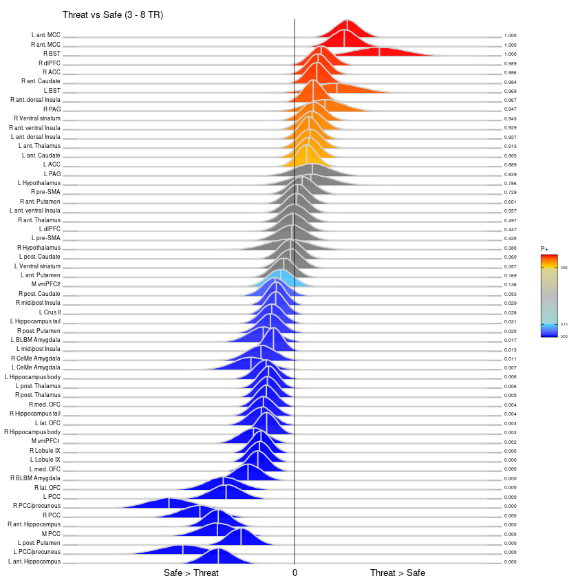

<!DOCTYPE html>

<html>
  <head>
    <meta charset="utf-8" />
    <meta name="viewport" content="width=device-width, initial-scale=1.0" />
    <title>Results: Early period &#8212; Mood Anxiety</title>
    <link rel="stylesheet" href="https://cdnjs.cloudflare.com/ajax/libs/font-awesome/5.11.2/css/all.min.css" integrity="sha384-KA6wR/X5RY4zFAHpv/CnoG2UW1uogYfdnP67Uv7eULvTveboZJg0qUpmJZb5VqzN" crossorigin="anonymous">
    <link href="../_static/css/index.css" rel="stylesheet">
    <link rel="stylesheet" href="../_static/sphinx-book-theme.css" type="text/css" />
    <link rel="stylesheet" href="../_static/pygments.css" type="text/css" />
    <link rel="stylesheet" type="text/css" href="../_static/togglebutton.css" />
    <link rel="stylesheet" type="text/css" href="../_static/copybutton.css" />
    <link rel="stylesheet" type="text/css" href="../_static/mystnb.css" />
    <link rel="stylesheet" type="text/css" href="../_static/sphinx-thebe.css" />
    <link rel="stylesheet" type="text/css" href="../_static/jupyter-sphinx.css" />
    <script id="documentation_options" data-url_root="../" src="../_static/documentation_options.js"></script>
    <script src="../_static/sphinx-book-theme.js"></script>
    <script src="../_static/jquery.js"></script>
    <script src="../_static/underscore.js"></script>
    <script src="../_static/doctools.js"></script>
    <script src="../_static/language_data.js"></script>
    <script src="../_static/togglebutton.js"></script>
    <script src="../_static/clipboard.min.js"></script>
    <script src="../_static/copybutton.js"></script>
    <script src="../_static/mystnb.js"></script>
    <script src="../_static/sphinx-book-theme.js"></script>
    <script >var togglebuttonSelector = '.toggle, .admonition.dropdown, .tag_hide_input div.cell_input, .tag_hide-input div.cell_input, .tag_hide_output div.cell_output, .tag_hide-output div.cell_output, .tag_hide_cell.cell, .tag_hide-cell.cell';</script>
    <script src="https://cdnjs.cloudflare.com/ajax/libs/require.js/2.3.4/require.min.js"></script>
    <script src="https://unpkg.com/@jupyter-widgets/html-manager@^0.18.0/dist/embed-amd.js"></script>
    <script async="async" src="https://cdnjs.cloudflare.com/ajax/libs/mathjax/2.7.7/latest.js?config=TeX-AMS-MML_HTMLorMML"></script>
    <script async="async" src="https://unpkg.com/thebelab@latest/lib/index.js"></script>
    <script >
        const thebe_selector = ".thebe"
        const thebe_selector_input = "pre"
        const thebe_selector_output = ".output"
    </script>
    <script async="async" src="../_static/sphinx-thebe.js"></script>
    <link rel="index" title="Index" href="../genindex.html" />
    <link rel="search" title="Search" href="../search.html" />

    <meta name="viewport" content="width=device-width, initial-scale=1">
    <meta name="docsearch:language" content="en">


  </head>
  <body data-spy="scroll" data-target="#bd-toc-nav" data-offset="80">
    

    <div class="container-xl">
      <div class="row">
          
<div class="col-12 col-md-3 bd-sidebar site-navigation show" id="site-navigation">
    
        <div class="navbar-brand-box">
<a class="navbar-brand text-wrap" href="../index.html">
  
  
  
  
  <h1 class="site-logo" id="site-title">Mood Anxiety</h1>
  
</a>
</div>

<form class="bd-search d-flex align-items-center" action="../search.html" method="get">
  <i class="icon fas fa-search"></i>
  <input type="search" class="form-control" name="q" id="search-input" placeholder="Search this book..." aria-label="Search this book..." autocomplete="off" >
</form>

<nav class="bd-links" id="bd-docs-nav" aria-label="Main navigation">
  <ul class="nav sidenav_l1">
 <li class="toctree-l1">
  <a class="reference internal" href="../intro.html">
   Mood-Anxiety (MAX)
  </a>
 </li>
</ul>
</nav>

 <!-- To handle the deprecated key -->

<div class="navbar_extra_footer">
  Powered by <a href="https://jupyterbook.org">Jupyter Book</a>
</div>

</div>


          


          
<main class="col py-md-3 pl-md-4 bd-content overflow-auto" role="main">
    
    <div class="row topbar fixed-top container-xl">
    <div class="col-12 col-md-3 bd-topbar-whitespace site-navigation show">
    </div>
    <div class="col pl-2 topbar-main">
        
        <button id="navbar-toggler" class="navbar-toggler ml-0" type="button" data-toggle="collapse"
            data-toggle="tooltip" data-placement="bottom" data-target=".site-navigation" aria-controls="navbar-menu"
            aria-expanded="true" aria-label="Toggle navigation" aria-controls="site-navigation"
            title="Toggle navigation" data-toggle="tooltip" data-placement="left">
            <i class="fas fa-bars"></i>
            <i class="fas fa-arrow-left"></i>
            <i class="fas fa-arrow-up"></i>
        </button>
        
        <div class="dropdown-buttons-trigger">
    <button id="dropdown-buttons-trigger" class="btn btn-secondary topbarbtn" aria-label="Download this page"><i
            class="fas fa-download"></i></button>

    
    <div class="dropdown-buttons">
        <!-- ipynb file if we had a myst markdown file -->
        
        <!-- Download raw file -->
        <a class="dropdown-buttons" href="../_sources/01-final-ROIs/03a-MAX-early_results.ipynb"><button type="button"
                class="btn btn-secondary topbarbtn" title="Download source file" data-toggle="tooltip"
                data-placement="left">.ipynb</button></a>
        <!-- Download PDF via print -->
        <button type="button" id="download-print" class="btn btn-secondary topbarbtn" title="Print to PDF"
            onClick="window.print()" data-toggle="tooltip" data-placement="left">.pdf</button>
    </div>
    
</div>
        <!-- Source interaction buttons -->


        <!-- Full screen (wrap in <a> to have style consistency -->
        <a class="full-screen-button"><button type="button" class="btn btn-secondary topbarbtn" data-toggle="tooltip"
                data-placement="bottom" onclick="toggleFullScreen()" title="Fullscreen mode"><i
                    class="fas fa-expand"></i></button></a>

        <!-- Launch buttons -->

    </div>

    <!-- Table of contents -->
    <div class="d-none d-md-block col-md-2 bd-toc show">
        <div class="tocsection onthispage pt-5 pb-3">
            <i class="fas fa-list"></i> On this page
        </div>
        <nav id="bd-toc-nav">
            <ul class="nav section-nav flex-column">
 <li class="toc-h2 nav-item toc-entry">
  <a class="reference internal nav-link" href="#model">
   Model
  </a>
 </li>
 <li class="toc-h2 nav-item toc-entry">
  <a class="reference internal nav-link" href="#priors">
   Priors
  </a>
 </li>
</ul>

        </nav>
    </div>
</div>
    <div id="main-content" class="row">
        <div class="col-12 col-md-9 pl-md-3 pr-md-0">
        
              <div>
                
  <div class="section" id="results-early-period">
<h1>Results: Early period<a class="headerlink" href="#results-early-period" title="Permalink to this headline">¶</a></h1>
<p>This notebook displays BML results for the early period.</p>
<div class="cell docutils container">
<div class="cell_input docutils container">
<div class="highlight-default notranslate"><div class="highlight"><pre><span></span>library(IRdisplay)

display_html(
&#39;&lt;script&gt;  
code_show=true; 
function code_toggle() {
  if (code_show){
    $(\&#39;div.input\&#39;).hide();
  } else {
    $(\&#39;div.input\&#39;).show();
  }
  code_show = !code_show
}  
$( document ).ready(code_toggle);
&lt;/script&gt;
  &lt;form action=&quot;javascript:code_toggle()&quot;&gt;
    &lt;input type=&quot;submit&quot; value=&quot;Click here to toggle on/off the raw code.&quot;&gt;
 &lt;/form&gt;&#39;
)
</pre></div>
</div>
</div>
<div class="cell_output docutils container">
<div class="output text_html"><script>  
code_show=true; 
function code_toggle() {
  if (code_show){
    $('div.input').hide();
  } else {
    $('div.input').show();
  }
  code_show = !code_show
}  
$( document ).ready(code_toggle);
</script>
  <form action="javascript:code_toggle()">
    <input type="submit" value="Click here to toggle on/off the raw code.">
 </form></div></div>
</div>
<div class="cell docutils container">
<div class="cell_input docutils container">
<div class="highlight-default notranslate"><div class="highlight"><pre><span></span><span class="n">library</span><span class="p">(</span><span class="n">brms</span><span class="p">)</span>
<span class="n">library</span><span class="p">(</span><span class="n">dplyr</span><span class="p">)</span>
<span class="n">library</span><span class="p">(</span><span class="n">data</span><span class="o">.</span><span class="n">table</span><span class="p">)</span>

<span class="n">library</span><span class="p">(</span><span class="n">tidyverse</span><span class="p">)</span>
<span class="n">library</span><span class="p">(</span><span class="n">ggridges</span><span class="p">)</span>
<span class="n">options</span><span class="p">(</span><span class="n">warn</span> <span class="o">=</span> <span class="o">-</span><span class="mi">1</span><span class="p">)</span>
</pre></div>
</div>
</div>
<div class="cell_output docutils container">
<div class="stderr docutils container">
<pre class="stderr literal-block">Loading required package: Rcpp

</pre>
</div>
<div class="stderr docutils container">
<pre class="stderr literal-block">Loading 'brms' package (version 2.12.0). Useful instructions
can be found by typing help('brms'). A more detailed introduction
to the package is available through vignette('brms_overview').

</pre>
</div>
<div class="stderr docutils container">
<pre class="stderr literal-block">
Attaching package: ‘brms’


</pre>
</div>
<div class="stderr docutils container">
<pre class="stderr literal-block">The following object is masked from ‘package:stats’:

    ar


</pre>
</div>
<div class="stderr docutils container">
<pre class="stderr literal-block">
Attaching package: ‘dplyr’


</pre>
</div>
<div class="stderr docutils container">
<pre class="stderr literal-block">The following objects are masked from ‘package:stats’:

    filter, lag


</pre>
</div>
<div class="stderr docutils container">
<pre class="stderr literal-block">The following objects are masked from ‘package:base’:

    intersect, setdiff, setequal, union


</pre>
</div>
<div class="stderr docutils container">
<pre class="stderr literal-block">
Attaching package: ‘data.table’


</pre>
</div>
<div class="stderr docutils container">
<pre class="stderr literal-block">The following objects are masked from ‘package:dplyr’:

    between, first, last


</pre>
</div>
<div class="stderr docutils container">
<pre class="stderr literal-block">── Attaching packages ─────────────────────────────────────── tidyverse 1.3.0 ──

</pre>
</div>
<div class="stderr docutils container">
<pre class="stderr literal-block">✔ ggplot2 3.3.0     ✔ purrr   0.3.3
✔ tibble  3.0.0     ✔ stringr 1.4.0
✔ tidyr   1.0.2     ✔ forcats 0.5.0
✔ readr   1.3.1     

</pre>
</div>
<div class="stderr docutils container">
<pre class="stderr literal-block">── Conflicts ────────────────────────────────────────── tidyverse_conflicts() ──
✖ data.table::between() masks dplyr::between()
✖ dplyr::filter()       masks stats::filter()
✖ data.table::first()   masks dplyr::first()
✖ dplyr::lag()          masks stats::lag()
✖ data.table::last()    masks dplyr::last()
✖ purrr::transpose()    masks data.table::transpose()

</pre>
</div>
</div>
</div>
<div class="section" id="model">
<h2>Model<a class="headerlink" href="#model" title="Permalink to this headline">¶</a></h2>
<p>Model expressed in lme4 format:</p>
<center> Y $\sim$ 1 + cond + state + trait + (1 + cond | SUB) + (1 + cond + state + trait | ROI) </center><p>Full model therefore (in the notation McElreath 2020):</p>
<div class="math notranslate nohighlight">
\[Y_{s,r} \sim Student(\nu,\mu_{s,r},\sigma^{2}_{s,r})\]</div>
<div class="math notranslate nohighlight">
\[\mu_{s,r} = \alpha + \alpha_{SUB} + \alpha_{ROI} + (\beta_{cond} +\beta_{SUB_{cond}}+ \beta_{ROI_{cond}})*cond + (\beta_{state} + \beta_{ROI_{state}})*state + (\beta_{trait} + \beta_{ROI_{trait}})*trait + \epsilon \]</div>
<p>Where,<br />
<span class="math notranslate nohighlight">\(\mu_{s,r}\)</span>: mean ROI response in the given subject for a particular phase and block type.<br />
<em>cond</em>: Threat (0.5) vs. Safe (-0.5)<br />
<em>state</em>: subject’s state score<br />
<em>trait</em>: subject’s trait score</p>
</div>
<div class="section" id="priors">
<h2>Priors<a class="headerlink" href="#priors" title="Permalink to this headline">¶</a></h2>
<p><span class="math notranslate nohighlight">\(\alpha \sim Student(3,0,10)\)</span> [population effect]<br />
<span class="math notranslate nohighlight">\(\alpha_{SUB} \sim Student(\nu_{SUB},0,\sigma_{SUB})\)</span> [Subject effect]<br />
<span class="math notranslate nohighlight">\(\alpha_{ROI} \sim Student(\nu_{ROI},0,\sigma_{ROI})\)</span> [ROI effect]</p>
<p><span class="math notranslate nohighlight">\(\beta_{cond} \sim Student(3,0,10)\)</span> [population effect: cond]<br />
<span class="math notranslate nohighlight">\(\beta_{state} \sim Student(3,0,10)\)</span> [population effect: state]<br />
<span class="math notranslate nohighlight">\(\beta_{trait} \sim Student(3,0,10)\)</span> [population effect: trait]</p>
<p><span class="math notranslate nohighlight">\(\begin{bmatrix}
  \alpha_{ROI} \\
  \beta_{ROI_{cond}} \\
  \beta_{ROI_{state}} \\
  \beta_{ROI_{trait}}
\end{bmatrix} \sim MVNormal(\begin{bmatrix} 0 \\ 0 \\ 0 \\ 0 \end{bmatrix},S)\)</span></p>
<p>$ S = \begin{bmatrix} \sigma_{\alpha_{ROI}} &amp; &amp; &amp; \ &amp; \sigma_{\beta_{ROI_{cond}}} &amp; &amp; \ &amp; &amp; \sigma_{\beta_{ROI_{state}}} &amp; \ &amp; &amp; &amp; \sigma_{\beta_{ROI_{trait}}} \end{bmatrix} R \begin{bmatrix} \sigma_{\alpha_{ROI}} &amp; &amp; &amp; \ &amp; \sigma_{\beta_{ROI_{cond}}} &amp; &amp; \ &amp; &amp; \sigma_{\beta_{ROI_{state}}} &amp; \ &amp; &amp; &amp; \sigma_{\beta_{ROI_{trait}}} \end{bmatrix}$</p>
<p><span class="math notranslate nohighlight">\(\begin{bmatrix}
  \alpha_{SUB} \\
  \beta_{SUB_{cond}}
\end{bmatrix} \sim MVNormal(\begin{bmatrix} 0 \\ 0 \end{bmatrix},S)\)</span></p>
<p>$ S = \begin{bmatrix} \sigma_{\alpha_{SUB}} &amp; \ &amp; \sigma_{\beta_{SUB_{cond}}} \end{bmatrix} R \begin{bmatrix} \sigma_{\alpha_{SUB}} &amp; \ &amp; \sigma_{\beta_{SUB_{cond}}} \end{bmatrix}$</p>
<p><span class="math notranslate nohighlight">\(\sigma_{SUB} \sim HalfStudent(3,0,10)\)</span> [prior stddev for Subject effect]<br />
<span class="math notranslate nohighlight">\(\sigma_{ROI} \sim HalfStudent(3,0,10)\)</span> [prior stddev for ROI effect]<br />
<span class="math notranslate nohighlight">\(\nu_{SUB} \sim \Gamma(3.325,0.1)\)</span> [Subject effect hyperprior]<br />
<span class="math notranslate nohighlight">\(\nu_{ROI} \sim \Gamma(3.325,0.1)\)</span> [ROI effect hyperprior]</p>
<p><span class="math notranslate nohighlight">\(\sigma_{\alpha} \sim HalfStudent(3,0,10)\)</span> [prior stddev among intercepts]<br />
<span class="math notranslate nohighlight">\(\sigma_{\beta} \sim HalfStudent(3,0,10)\)</span> [prior stddev among slopes]</p>
<p><span class="math notranslate nohighlight">\(R \sim LKJcorr(2)\)</span> [prior of correlation matix]</p>
<div class="cell docutils container">
<div class="cell_input docutils container">
<div class="highlight-default notranslate"><div class="highlight"><pre><span></span><span class="c1"># Load the BML output image</span>
<span class="n">load</span><span class="p">(</span><span class="s1">&#39;results_offset/early.RData&#39;</span><span class="p">)</span>
<span class="n">outDir</span> <span class="o">=</span> <span class="s1">&#39;results_offset/early_&#39;</span>
<span class="n">summary_file</span> <span class="o">=</span> <span class="n">paste0</span><span class="p">(</span><span class="n">outDir</span><span class="p">,</span><span class="s1">&#39;summary.txt&#39;</span><span class="p">)</span>
</pre></div>
</div>
</div>
</div>
<div class="cell docutils container">
<div class="cell_input docutils container">
<div class="highlight-default notranslate"><div class="highlight"><pre><span></span><span class="nb">print</span><span class="p">(</span><span class="s1">&#39;Following are the first few rows of thet dataset used in BML&#39;</span><span class="p">)</span>
<span class="n">head</span><span class="p">(</span><span class="n">dataTable</span><span class="p">)</span>
</pre></div>
</div>
</div>
<div class="cell_output docutils container">
<div class="output stream highlight-none notranslate"><div class="highlight"><pre><span></span>[1] &quot;Following are the first few rows of thet dataset used in BML&quot;
</pre></div>
</div>
<div class="output text_html"><table>
<caption>A data.frame: 6 × 7</caption>
<thead>
	<tr><th></th><th scope=col>Subj</th><th scope=col>ROI</th><th scope=col>beta</th><th scope=col>se</th><th scope=col>cond</th><th scope=col>TRAIT</th><th scope=col>STATE</th></tr>
	<tr><th></th><th scope=col>&lt;fct&gt;</th><th scope=col>&lt;fct&gt;</th><th scope=col>&lt;dbl&gt;</th><th scope=col>&lt;dbl&gt;</th><th scope=col>&lt;dbl&gt;</th><th scope=col>&lt;dbl&gt;</th><th scope=col>&lt;dbl&gt;</th></tr>
</thead>
<tbody>
	<tr><th scope=row>1</th><td>MAX101</td><td>L ACC             </td><td>0.143191</td><td>0.03217142</td><td>-0.5</td><td>-1.164152</td><td>-1.011495</td></tr>
	<tr><th scope=row>2</th><td>MAX101</td><td>L BLBM Amygdala   </td><td>0.455408</td><td>0.09101648</td><td>-0.5</td><td>-1.164152</td><td>-1.011495</td></tr>
	<tr><th scope=row>3</th><td>MAX101</td><td>L BST             </td><td>0.657150</td><td>0.11633142</td><td>-0.5</td><td>-1.164152</td><td>-1.011495</td></tr>
	<tr><th scope=row>4</th><td>MAX101</td><td>L CeMe Amygdala   </td><td>0.388874</td><td>0.09688653</td><td>-0.5</td><td>-1.164152</td><td>-1.011495</td></tr>
	<tr><th scope=row>5</th><td>MAX101</td><td>L Crus II         </td><td>0.116351</td><td>0.02803569</td><td>-0.5</td><td>-1.164152</td><td>-1.011495</td></tr>
	<tr><th scope=row>6</th><td>MAX101</td><td>L Hippocampus body</td><td>0.267160</td><td>0.04748684</td><td>-0.5</td><td>-1.164152</td><td>-1.011495</td></tr>
</tbody>
</table>
</div></div>
</div>
<div class="cell docutils container">
<div class="cell_input docutils container">
<div class="highlight-default notranslate"><div class="highlight"><pre><span></span>EOIq &lt;- unlist(lapply(strsplit(mod,&#39;\\+&#39;)[[1]],trimws))
if(!(&#39;Intercept&#39; %in% EOIq)) EOIq &lt;- c(&#39;Intercept&#39;, EOIq)
EOIq &lt;- EOIq[!grepl(&#39;1&#39;, EOIq)]

print(&#39;Fixed effect model terms:&#39;)
print(EOIq)
</pre></div>
</div>
</div>
<div class="cell_output docutils container">
<div class="output stream highlight-none notranslate"><div class="highlight"><pre><span></span>[1] &quot;Fixed effect model terms:&quot;
</pre></div>
</div>
<div class="output stream highlight-none notranslate"><div class="highlight"><pre><span></span>[1] &quot;Intercept&quot; &quot;cond&quot;      &quot;STATE&quot;     &quot;TRAIT&quot;    
</pre></div>
</div>
</div>
</div>
<div class="cell docutils container">
<div class="cell_input docutils container">
<div class="highlight-default notranslate"><div class="highlight"><pre><span></span><span class="c1"># Print the BML output summary</span>
<span class="n">cat</span><span class="p">(</span><span class="s1">&#39;====================================== BML output Summary ======================================&#39;</span><span class="p">,</span>
    <span class="n">file</span> <span class="o">=</span> <span class="n">summary_file</span><span class="p">,</span> <span class="n">sep</span> <span class="o">=</span> <span class="s1">&#39;</span><span class="se">\n</span><span class="s1">&#39;</span><span class="p">)</span>
<span class="n">cat</span><span class="p">(</span><span class="n">capture</span><span class="o">.</span><span class="n">output</span><span class="p">(</span><span class="n">summary</span><span class="p">(</span><span class="n">fm</span><span class="p">)),</span> <span class="n">file</span> <span class="o">=</span> <span class="n">summary_file</span><span class="p">,</span> <span class="n">sep</span> <span class="o">=</span> <span class="s1">&#39;</span><span class="se">\n</span><span class="s1">&#39;</span><span class="p">)</span>
</pre></div>
</div>
</div>
</div>
<div class="cell docutils container">
<div class="cell_input docutils container">
<div class="highlight-default notranslate"><div class="highlight"><pre><span></span># Extract posteriors for fixed (aa) and random effects (bb)
aa &lt;- fixef(fm, summary = FALSE)/SCALE # Population-Level Estimates
bb &lt;- lapply(ranef(fm, summary = FALSE), `/`, SCALE) # Extract Group-Level (or random-effect)

# Sum the fixed and random effect (only ROI) posterior. Following function does this.
# The function adds the &quot;the poaterior of the global intercept (or slope) with the 
# intercept (or slope) posterior of each roi. bb[[&#39;ROI&#39;]][,,tm] is a matrix with 
# columns containing posteriors for every ROI
# aa[,tm] is a single column posterior for the global intercept/slope.
# intercept or slope is defined by tm, where tm is the index of the model term.
psROI &lt;- function(aa, bb, tm) {
  ps &lt;- apply(bb[[&#39;ROI&#39;]][,,tm], 2, &#39;+&#39;, aa[,tm])
  return(ps)
}

#################################### Following functions are used for summarizing BML and GLM outputs in a table from ############################
# function to compute P+
cnt &lt;- function(x, ns) return(sum(x&gt;0)/ns)

# function that creates a BML summary table for ROI posteriors (mean, std, and quartiles),
# nd - number of digits to output
sumROI &lt;- function(R0, ns, nd) {
  hubs &lt;- data.frame(cbind(apply(R0, 2, mean), apply(R0, 2, sd), apply(R0, 2, cnt, ns), t(apply(R0, 2, quantile, 
      probs=c(0.025, 0.05, 0.5, 0.95, 0.975)))))
  names(hubs) &lt;- c(&#39;mean&#39;, &#39;SD&#39;, &#39;P+&#39;, &#39;2.5%&#39;, &#39;5%&#39;, &#39;50%&#39;, &#39;95%&#39;, &#39;97.5%&#39;)
  return(round(hubs,nd))
}

# function that run conventional glm on each ROI individually
sumGLM &lt;- function(ll, tm, nR, DF, nd) {
   th &lt;- qt(c(0.025, 0.05, 0.5, 0.95, 0.975), DF)
   rr &lt;- matrix(0, nrow = nR, ncol = 8, dimnames=list(levels(dataTable$ROI), c(&#39;mean&#39;, &#39;SD&#39;, &#39;2-sided-p&#39;, &#39;2.5%&#39;, &#39;5%&#39;, &#39;50%&#39;, &#39;95%&#39;, &#39;97.5%&#39;)))
   rownames(rr) &lt;- levels(dataTable$ROI)
   if(tm == &#39;Intercept&#39;) tm &lt;- &#39;(Intercept)&#39;
   for(ii in 1:nR) {
     u1 &lt;- ll[[ii]]$coefficients[tm,1] # mean
     u2 &lt;- ll[[ii]]$coefficients[tm,2] # sd
     u3 &lt;- ll[[ii]]$coefficients[tm,4] # 2-sided p
     rr[ii,] &lt;- round(c(u1, u2, u3, u1+u2*th),nd)
   } 
   return(rr)
}
</pre></div>
</div>
</div>
</div>
<div class="cell docutils container">
<div class="cell_input docutils container">
<div class="highlight-default notranslate"><div class="highlight"><pre><span></span># Following print BML and GLM result summary for each ROI
for (ii in 1:length(EOIq)){
    #cat(&#39;\n&#39;,paste0(outDir,&#39;summary.txt&#39;), sep = &#39;\n&#39;, append=TRUE)
    cat(sprintf(&#39;========= Summary of region effects for %s (RBA results) =========&#39;, EOIq[ii]), 
        file = summary_file, sep = &#39;\n&#39;, append=TRUE)
    ps0 &lt;- psROI(aa, bb, EOIq[ii])
    gg_brm &lt;- sumROI(ps0, ns, nfigs)
    write.table(gg_brm,file = paste0(outDir,EOIq[ii],&#39;.txt&#39;),sep = &#39;,&#39;)
    #gg_brm$ROI &lt;- factor(rownames(gg_brm))
    cat(capture.output(gg_brm), file = summary_file, sep = &#39;\n&#39;, append=TRUE)

    cat(sprintf(&#39;===================================================================================================================&#39;), 
        file = summary_file, sep=&#39;\n&#39;, append=TRUE)
    cat(sprintf(&#39;========= Summary of region effects under GLM for %s (for reference only): no adjustment for multiplicity =========&#39;, EOIq[ii]),
        file = summary_file,sep = &#39;\n&#39;, append=TRUE)
    mm &lt;- list()
    GLM &lt;- as.formula(paste(&#39;beta ~ &#39;,mod))
    if(SCALE!=1) dataTable$Y &lt;- (dataTable$Y)/SCALE  # scale back for GLM
    for(kk in levels(dataTable$ROI)) mm[[kk]] = lm(GLM, data=dataTable[dataTable$ROI==kk,])
    nn &lt;- lapply(mm, summary)
    ll &lt;- lapply(nn, `[`, &#39;coefficients&#39;)
    gg_glm &lt;- sumGLM(ll, EOIq[ii], nR, nn[[ii]]$df, nfigs)
    gg_glm = as.data.frame(gg_glm)
    cat(capture.output(gg_glm), file = summary_file, sep = &#39;\n&#39;, append=TRUE)
    cat(&#39;\n&#39;,file = summary_file, sep = &#39;\n&#39;, append=TRUE)
}
</pre></div>
</div>
</div>
</div>
<div class="cell docutils container">
<div class="cell_input docutils container">
<div class="highlight-default notranslate"><div class="highlight"><pre><span></span># Function to create ridge plots 
plotPDP &lt;- function(posteriors) {
    rm(list=ls())
    ## import BML posterior table
    posteriors &lt;- as_tibble(posteriors)
    df.long &lt;- posteriors %&gt;% reshape2::melt()

    calc.p &lt;- function(x) {
      calc = sum(x &gt; 0)/length(x)
    }

    P. &lt;- as.data.frame(apply(posteriors,2,calc.p))  

    #add row names and ID
    setDT(P., keep.rownames = TRUE)[]  

    colnames(P.) &lt;- c(&quot;ROIs&quot;, &quot;P.&quot;)


    nobj &lt;- dim(posteriors)[1]
    df.long$P. &lt;- rep(P.$P., each = nobj)

    # add an index for plotting
    df.long$index &lt;- rep(1:length(P.$ROIs), each = nobj)


    df.long$P.grayed &lt;- df.long$P.

    df.long$P.grayed &lt;- replace(df.long$P.grayed, df.long$P.grayed &gt; 0.15 &amp; df.long$P.grayed &lt; 0.85, NA)

    # sort P+ and ROIs by P+ for plotting
    P.labels &lt;- P. %&gt;% arrange(P.)

    ggplot(df.long, aes(x = value, y = as.numeric(reorder(index, P.)), group = variable, fill = P.grayed)) +
        stat_density_ridges(quantile_lines = TRUE,
                      quantiles = 2,
                      alpha = .95,
                      scale = 2.55,
                      color = &quot;lightgray&quot;,
                      size = .55) + 
        coord_cartesian(xlim = c(min(df.long$value), max(df.long$value))) +
        geom_vline(xintercept = 0, linetype=&quot;solid&quot;,color = &quot;black&quot;,alpha = .95, size = .25) +
        scale_fill_gradientn( colors = c(&quot;blue&quot;,&quot;cyan&quot;,
                                  &quot;gray&quot;,&quot;yellow&quot;,&quot;red&quot;),
                        values = c(0,0.15,
                                   0.150000001, 0.85,
                                   0.850000001, 1.0),
                       breaks = c(0, 0.15, 0.85, 1)) +
        scale_x_continuous(breaks = c(-0.15, 0, 0.15),
                     #labels = c( &quot;0 &gt; &quot;, &quot;0&quot;, &quot;0 &lt;&quot;)) +  # change to whatever labels you&#39;re using
                     labels = c( &quot;Safe &gt; Threat&quot;, &quot;0&quot;, &quot;Threat &gt; Safe&quot;)) +  # change to whatever labels you&#39;re using
        scale_y_continuous(breaks = c(1:length(P.labels$ROIs)),
                      expand = c(0,0.1),
                      labels = P.labels$ROIs, 
                     sec.axis = sec_axis(~.,
                                          breaks = 1:length(P.labels$ROIs),
                                          labels = format(round(P.labels$P.,3),nsmall = 2))) +
        guides(fill = guide_colorbar(barwidth = 1,
                                  barheight = 5,
                                  nbin = 50,
                                  frame.colour = &quot;black&quot;,
                                  frame.linewidth = 0.5,
                                  ticks.colour = &quot;black&quot;)) +
        theme_ridges(center_axis_labels = TRUE, grid = FALSE) +
        theme(
        panel.background = element_blank(),
        panel.grid.major.y = element_line(color = &quot;grey&quot;),
        plot.title = element_text(size = 8, margin = unit(c(0.3,0,0,0.2),&quot;cm&quot;), face = &quot;plain&quot;),
        legend.title = element_text(size = 5),
        legend.text = element_text(size = 3),
        #legend.position = &quot;none&quot;,
        axis.text.y = element_text(size= 5, color = &quot;black&quot;, margin = unit(c(0,-0.05,0,0.05),&quot;cm&quot;)),
       # axis.line.x = element_line(color = &quot;gray&quot;),
        axis.text.y.right = element_text(size = 4, color = &quot;black&quot;,margin = unit(c(0,0,0,-0.05),&quot;cm&quot;)),
        axis.text.x = element_text(size = 8, color = &quot;black&quot;, margin = unit(c(0.02,0,0,0),&quot;cm&quot;)),
        plot.margin = unit(c(0,0.05,0,0.07), &quot;cm&quot;),
        axis.ticks.x = element_blank(),
        axis.ticks.y = element_blank()) +
        labs(x = NULL,
             y = NULL,
             title = &quot;Threat vs Safe (3 - 8 TR)&quot;,
             fill = &quot;P+&quot;)
#ggsave(&quot;posteriors.jpg&quot;, width=4.5, height=3, units = &quot;in&quot;, dpi = 900)
}
</pre></div>
</div>
</div>
</div>
<div class="cell docutils container">
<div class="cell_input docutils container">
<div class="highlight-default notranslate"><div class="highlight"><pre><span></span><span class="c1"># generates ridge plots for effects (Intercept, cond, TRAIT and STATE), and saves them.</span>
<span class="k">for</span> <span class="p">(</span><span class="n">ii</span> <span class="ow">in</span> <span class="mi">1</span><span class="p">:</span><span class="n">length</span><span class="p">(</span><span class="n">EOIq</span><span class="p">)){</span>
    <span class="n">posteriors</span> <span class="o">&lt;-</span> <span class="n">psROI</span><span class="p">(</span><span class="n">aa</span><span class="p">,</span> <span class="n">bb</span><span class="p">,</span> <span class="n">EOIq</span><span class="p">[</span><span class="n">ii</span><span class="p">])</span>
    <span class="n">plotPDP</span><span class="p">(</span><span class="n">posteriors</span><span class="p">)</span>
    <span class="n">ggsave</span><span class="p">(</span><span class="n">paste0</span><span class="p">(</span><span class="n">outDir</span><span class="p">,</span><span class="n">EOIq</span><span class="p">[</span><span class="n">ii</span><span class="p">],</span><span class="s1">&#39;.png&#39;</span><span class="p">),</span> <span class="n">width</span><span class="o">=</span><span class="mf">4.5</span><span class="p">,</span> <span class="n">height</span><span class="o">=</span><span class="mi">3</span><span class="p">,</span> <span class="n">units</span> <span class="o">=</span> <span class="s2">&quot;in&quot;</span><span class="p">,</span> <span class="n">dpi</span> <span class="o">=</span> <span class="mi">900</span><span class="p">)</span>
<span class="p">}</span>
</pre></div>
</div>
</div>
<div class="cell_output docutils container">
<div class="stderr docutils container">
<pre class="stderr literal-block">No id variables; using all as measure variables

</pre>
</div>
<div class="stderr docutils container">
<pre class="stderr literal-block">Picking joint bandwidth of 0.00118

</pre>
</div>
<div class="stderr docutils container">
<pre class="stderr literal-block">No id variables; using all as measure variables

</pre>
</div>
<div class="stderr docutils container">
<pre class="stderr literal-block">Picking joint bandwidth of 0.00212

</pre>
</div>
<div class="stderr docutils container">
<pre class="stderr literal-block">No id variables; using all as measure variables

</pre>
</div>
<div class="stderr docutils container">
<pre class="stderr literal-block">Picking joint bandwidth of 0.00116

</pre>
</div>
<div class="stderr docutils container">
<pre class="stderr literal-block">No id variables; using all as measure variables

</pre>
</div>
<div class="stderr docutils container">
<pre class="stderr literal-block">Picking joint bandwidth of 0.00127

</pre>
</div>
</div>
</div>
<div class="cell docutils container">
<div class="cell_input docutils container">
<div class="highlight-default notranslate"><div class="highlight"><pre><span></span><span class="c1"># Displaying posteriors only for Threat &gt; Safe contrast (cond)</span>
<span class="n">posteriors</span> <span class="o">&lt;-</span> <span class="n">psROI</span><span class="p">(</span><span class="n">aa</span><span class="p">,</span> <span class="n">bb</span><span class="p">,</span> <span class="s1">&#39;cond&#39;</span><span class="p">)</span>
<span class="n">plotPDP</span><span class="p">(</span><span class="n">posteriors</span><span class="p">)</span>
</pre></div>
</div>
</div>
<div class="cell_output docutils container">
<div class="stderr docutils container">
<pre class="stderr literal-block">No id variables; using all as measure variables

</pre>
</div>
<div class="stderr docutils container">
<pre class="stderr literal-block">Picking joint bandwidth of 0.00212

</pre>
</div>

</div>
</div>
<div class="cell docutils container">
<div class="cell_input docutils container">
<div class="highlight-default notranslate"><div class="highlight"><pre><span></span><span class="c1"># Posterior predictive check</span>
<span class="n">pp_plot</span> <span class="o">=</span> <span class="n">pp_check</span><span class="p">(</span><span class="n">fm</span><span class="p">,</span><span class="n">nsamples</span> <span class="o">=</span> <span class="mi">100</span><span class="p">)</span>
<span class="n">pp_plot</span> <span class="o">+</span> <span class="n">xlim</span><span class="p">(</span><span class="o">-</span><span class="mf">1.5</span><span class="p">,</span><span class="mf">1.5</span><span class="p">)</span> <span class="o">+</span> <span class="n">theme</span><span class="p">(</span><span class="n">text</span> <span class="o">=</span> <span class="n">element_text</span><span class="p">(</span><span class="n">size</span><span class="o">=</span><span class="mi">25</span><span class="p">),</span><span class="n">legend</span><span class="o">.</span><span class="n">text</span><span class="o">=</span><span class="n">element_text</span><span class="p">(</span><span class="n">size</span><span class="o">=</span><span class="mi">25</span><span class="p">))</span> <span class="o">+</span> <span class="n">ggtitle</span><span class="p">(</span><span class="s2">&quot;Varying Intercepts and Slopes&quot;</span><span class="p">,)</span>
</pre></div>
</div>
</div>
<div class="cell_output docutils container">

</div>
</div>
</div>
</div>

    <script type="text/x-thebe-config">
    {
        requestKernel: true,
        binderOptions: {
            repo: "binder-examples/jupyter-stacks-datascience",
            ref: "master",
        },
        codeMirrorConfig: {
            theme: "abcdef",
            mode: "r"
        },
        kernelOptions: {
            kernelName: "ir",
            path: "./01-final-ROIs"
        },
        predefinedOutput: true
    }
    </script>
    <script>kernelName = 'ir'</script>

              </div>
              
        </div>
    </div>
    
    
    <div class='prev-next-bottom'>
        

    </div>
    <footer class="footer mt-5 mt-md-0">
    <div class="container">
      <p>
        
          By Chirag Limbachia<br/>
        
            &copy; Copyright 2020.<br/>
      </p>
    </div>
  </footer>
</main>


      </div>
    </div>

    <script src="../_static/js/index.js"></script>
    
  </body>
</html>